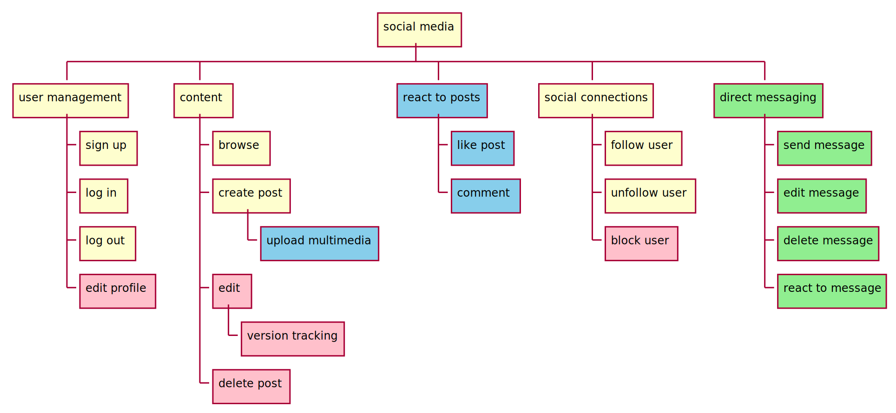
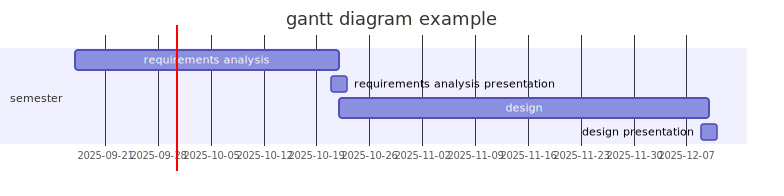

requirement analysis
Requirement analysis is all about understanding what software is supposed to do and the constraints it must operate within (Krysik, 2023).
- first step of the software development life cycle (SDLC)
- about understanding the task to avoid costly mistakes

steps of requirement analysis
- stakeholder identification
- elicitation of requirements (gathering data)
- documentation of requirements
- analysis and negotiation
- validation and verification
1. stakeholder identification
- not just the customers who commission the software
- also end users
- different roles / groups
2. elicitation of requirements
the team actively gathers detailed information about what the software needs to do from the identified stakeholders (Krysik, 2023)
- interviews
- one-on-one conversations with
stakeholders
to understand their needs
- one-on-one conversations with
stakeholders
- questionnaires
- gather information from a larger group
- user observation
- how potential users interact with
existing systems
to identify unspoken needs or problems - telemetry
- how potential users interact with
existing systems

3. documentation of requirements
for who
- future self
- colleagues
- every stakeholder of the project
how
- searchable
- organization-wide knowledge sharing (e.g., wiki)
- version tracked
- traceable
- who wrote / edited / approved it
4. analysis and negotiation
reviewing the documented requirements to make sure they are realistic and its implications are understood
- how difficult will it be to implement?
- does it conflict with any other requirements?
- is it actually necessary for the software’s success?

Negotiation comes into play when there are conflicting requirements or
limitations in resources like time or budget.
[…]
The goal
here is to finalize a set of requirements that is achievable and aligns
with the overall objectives of the project. (Krysik, 2023)
5. validation and verification
validation
- is about confirming that the requirements actually meet the needs of the stakeholders
- every stakeholder of the project
- are we building the right thing?
verification
- making sure that the requirements are documented correctly and
consistently
- like proofreading and quality checking
- to ensure that all requirements are clear, unambiguous, and consistent
- are we building the thing right?
requirement smells
- based on the idea of code smells (later in the course)
- (language based) signs in the requirements that are not necessarily
wrong but could be problematic, e.g.,:
- subjective language
- “The architecture as well as the programming must ensure a simple and efficient maintainability.”
- ambiguous adverbs and adjectives
- “If the (…) quality is too low, a fault must be written to the error memory.”
- non-verifiable terms
- “The system may only be activated, if all required sensors (…) work with sufficient measurement accuracy.”
- subjective language
examples from (Femmer et al., 2017)
requirement analysis document example
- it is a living document
- often updated throughout the project
as new information becomes available or requirements evolve - its main goal is to provide a clear, detailed, and agreed-upon set of requirements that guide the software development process
contents
- introduction
- stakeholder identification
- methodology
- detailed requirements
- functional requirements
- non-functional requirements
- data flow diagrams or models
- prioritization of requirements
- constraints and assumptions
- acceptance criteria (DoD)
- appendices
- version history and approvals
functional and non-functional requirements
functional requirements define what a system is supposed to do
and
non-functional requirements define how a system is supposed to operate
(Wikipedia contributors, 2024)
functional
- what
- features
- the webserver can serve pages via HTTP2
non-functional
- how
- quality goals, quality of service requirements
- webserver is available 99.9% of time
(yearly about 8h 41m downtime) - can serve at least 5.000 queries per sec
more examples on Wikipedia
non-functional requirements specifies criteria that can be used to evaluate the operation of a system, rather than specific behaviours
dependencies


dependencies within a software
- dependencies between the software components are not always obvious
- and can change over time
- the core functionalities should be determined at the start of the
project
- that can serve as a foundation for the rest of the software
- this requires comprehensive understanding of the project
- requirement analysis
minimum viable product
a new product or service is created with the minimum features necessary to satisfy early adopters and gather feedback for future development
minimum viable product


based on Making sense of MVP (Minimum Viable Product) by Henrik Kniberg
social media platform - example

social media platform - example

social media platform - example

social media platform - example

what is a user story?
- a popular tool in requirements analysis, particularly in agile software development methodologies
- simple description of a software feature
- from the perspective of the end user or customer
- usually recorded on cards or digital tools
- and are often accompanied by acceptance criteria (DoD),
- which define the conditions that must be met to be considered complete
as a [type of user], I want to [action/function] in order to
[benefit/value]
behaviour-driven development
- BDD is an extension of Test-Driven Development
- later in the course
- using behaviour-driven development (BDD) can help you to turn an idea
for a requirement into implemented, tested, production-ready code,
- as long as the requirement is specific enough that everyone knows what’s going on (Terhorst-North, 2007)
- BDD starts from a user story and focuses on adding the acceptance criteria
the structure of a story
Title (one line describing the story)
Narrative:
As a [role]
I want [feature]
So that [benefit]
Acceptance Criteria: (presented as Scenarios)
Scenario 1: Title
Given [context]
And [some more context]...
When [event]
Then [outcome]
And [another outcome]...
Scenario 2: ...
BDD uses natural-language constructs that can express the behavior and the expected outcomes
taken from (Terhorst-North, 2007) by Daniel Terhorst-North | CC-BY 4.0
ATM example
Story: Account Holder withdraws cash
As an Account Holder
I want to withdraw cash from an ATM
So that I can get money when the bank is closed
Acceptance Criteria:
Scenario 1: Account has sufficient funds
Given the account balance is $100
And the card is valid
And the machine contains enough money
When the Account Holder requests $20
Then the ATM should dispense $20
And the account balance should be $80
And the card should be returned
Scenario 2: Account has insufficient funds
Scenario 3: Card has been disabled
Scenario 4: The ATM has insufficient funds
taken from (Terhorst-North, 2007) by Daniel Terhorst-North | CC-BY 4.0
you can read the rest of the scenarios
it may be difficult to extract knowledge
- the scenarios (and tests) may require exact thresholds
- not like: if the temperature is too hot
- but: if the temperature is over 40°C
- need to interview domain specialists
- communication barrier, lack of common dictionary
benefits of requirements analysis
- clear project scope and objectives
- improved stakeholder satisfaction
- reduced development costs and time
- enhanced product quality
- better risk management
- better prioritization
- improved communication and collaboration
requirements analysis techniques
- user stories and user story mapping
- gantt charts
- flowcharts
- data flow diagram
- etc.
gantt chart
- project management tool
- illustrates a project schedule
- practical to construct the schedule from the deadline and go backward

flowchart
- represents a workflow or process
- diagrammatic representation of an algorithm, a step-by-step approach to solving a task
- ISO 5807
- published in 1985
- last reviewed in 2019
- Wikipedia / Flowchart

flowchart example

data flow diagram (DFD)
- use comprehensible entity names
- processes should be numbered for easier mapping and referral to specific processes
- should be clear, the number of processes (functions) in one DFD is recommended to be from 6 to 9 (minimum is 3)
- multi-level DFDs can be created

{kind=link}
data flow diagram (DFD)
- use comprehensible entity names
- processes should be numbered for easier mapping and referral to specific processes
- should be clear, the number of processes (functions) in one DFD is recommended to be from 6 to 9 (minimum is 3)
- multi-level DFDs can be created

data flow diagram example

references
Ambler, S. (2002). Agile modeling: Effective practices for extreme programming and the unified process. John Wiley & Sons.
Femmer, H., Fernández, D. M., Wagner, S., & Eder, S. (2017). Rapid quality assurance with requirements smells. Journal of Systems and Software, 123, 190–213.
Krysik, A. (2023). SDLC guide: Requirement analysis in software engineering. https://stratoflow.com/requirements-analysis .
Terhorst-North, D. (2007). What’s in a story? https://dannorth.net/whats-in-a-story .
Wikipedia contributors. (2024). Non-functional requirement — Wikipedia, the free encyclopedia. https://en.wikipedia.org/w/index.php?title=Non-functional_requirement&oldid=1245895117.